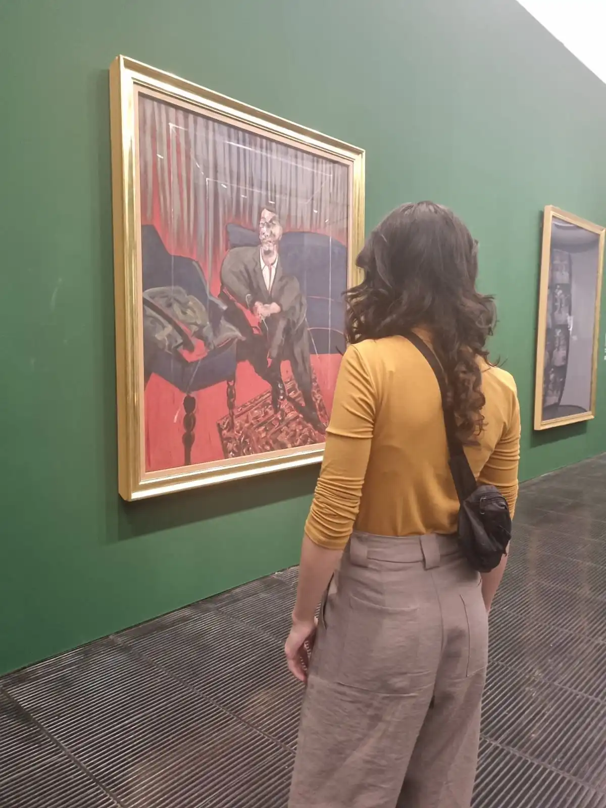
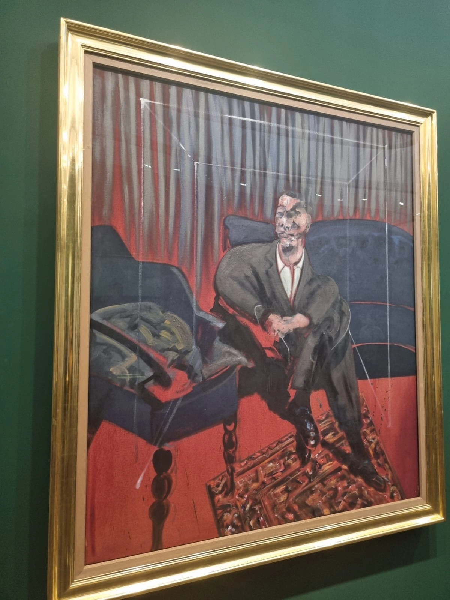
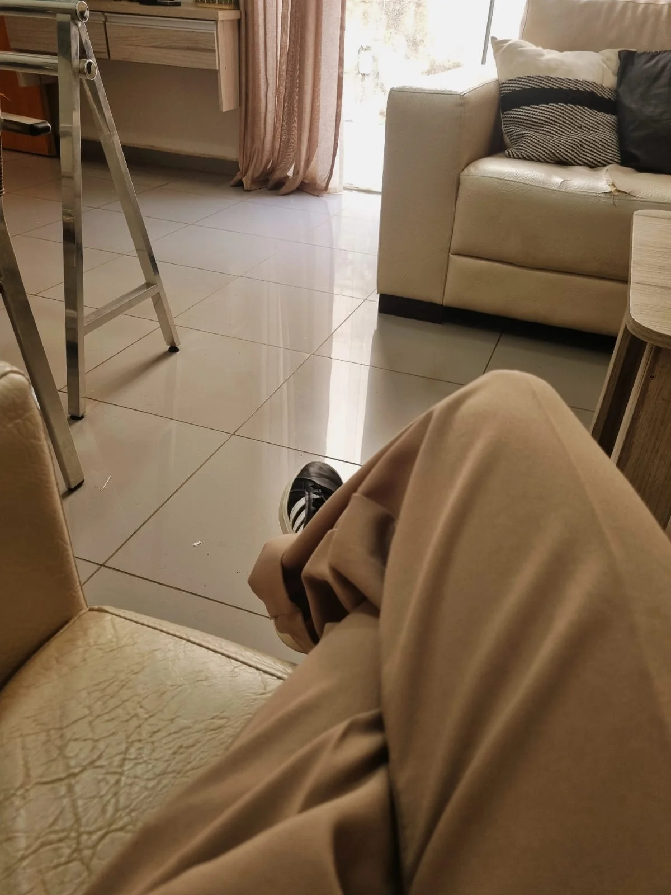
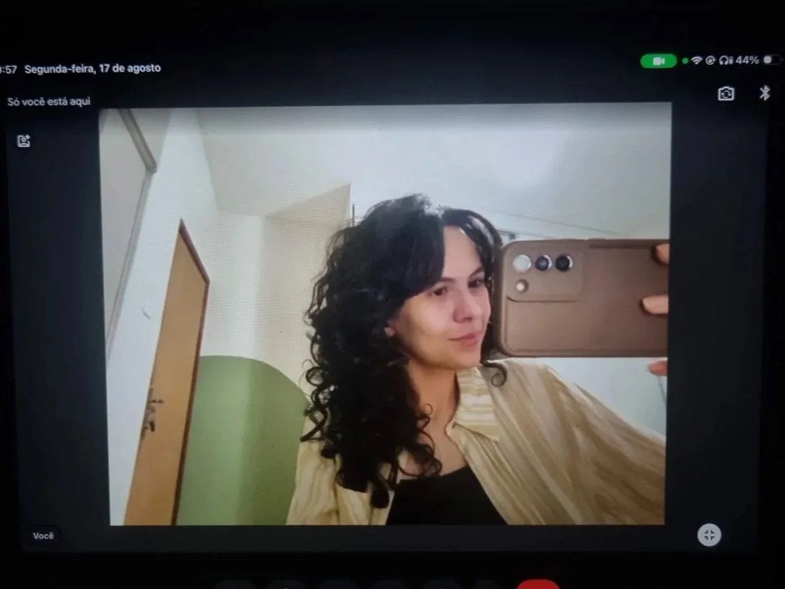

Oie, prazer! Me chamo Luiza Martins.
Sou nascida e criada nas terras de Minas Gerais. Psicóloga formada em Uberaba e psicanalista em formação contínua por meio de supervisão, grupos de estudo e análise pessoal.
Sou apaixonada por diversos tipos de arte como música, cinema, dança e pintura, além de amar viajar e praticar exercícios físicos. Sempre gostei de ler e pesquisar sobre a subjetividade e temáticas sociais, elementos que impactam diretamente minha forma de ver o mundo e minha clínica.
Desde o início da formação mergulhei na clínica, encantada pela experiência da análise: o ato de se escutar, reconhecer lados nunca vistos antes e transformar. Encontrar novos sentidos e seguir em movimento, mesmo quando é difícil.
Atendo brasileiros residentes no Brasil e no exterior (em mais de 5 países), o que me permitiu compreender ainda mais como a cultura afeta a nossa subjetividade.
Se você sofre com algo que insiste em voltar, uma angústia sem causa aparente ou modos de agir que gostaria de transformar, estou aqui para te ajudar a dar um novo contorno a isso e encontrar novas formas de viver.
Na clínica, também realizo orientação vocacional para jovens e adultos e coordeno grupos terapêuticos. Fora do consultório, atuo como psicóloga social em um projeto de prevenção à violência para jovens.


Minha prática é conduzida pela psicanálise lacaniana e atravessada por estudos sobre a contemporaneidade, o que me permite construir uma clínica crítica e sensível aos diferentes contextos.
Na psicanálise, compreendemos que o sofrimento humano nem sempre é reconhecido por uma causa aparente. As razões das nossas ações, escolhas, relações e sentimentos nem sempre são conscientes.
Existem conflitos que insistem e se repetem mesmo quando desejamos agir de outras formas. Assim, reconhecer racionalmente um problema não significa conseguir modificar a relação estabelecida com ele. Na análise, investigamos o que é de ordem inconsciente e os impasses da sua história.
A análise acontece por meio da sua fala e discurso ao longo das sessões. Você pode se sentir livre para trazer:
Não existe um roteiro ou ordem e não precisa saber previamente o que dizer.
"A análise não oferece respostas prontas e definitivas, mas possibilita um processo de investigação sobre si, abrindo espaço para novas compreensões e movimentos para sua vida."
Oferecemos condições para que o sofrimento possa ser elaborado e, a partir disso, se possa construir uma nova relação com ele, com a sua vida e seus desejos.
Acredito que o processo terapêutico se constrói no encontro. Por isso valorizo o vínculo e considero essencial um espaço seguro e acolhedor na relação com cada paciente.
O meu trabalho como analista é, por meio de uma escuta técnica, apontar, associar e participar ativamente dessa investigação.
Compreendemos e questionamos ideais fixos e sentidos rígidos que causam sofrimento para que possamos construir novos significados e a possibilidade de você contar a sua história de um outro modo.


Hoje atuo na clínica com atendimentos à adolescentes e adultos de forma online e presencial em Uberaba – MG.
No presencial ofereço um espaço físico. No meio online criamos esse espaço clínico, sendo acessível para realizar de qualquer lugar do mundo. Ambos possuem eficácia e a escolha depende da disponibilidade e preferência do paciente.
O importante é você se sentir à vontade, independente da modalidade terá o sigilo e acolhimento garantido.
As sessões são feitas no mínimo 1x por semana para que seja possível um acompanhamento mais presente, contínuo e um processo analítico mais eficaz. A frequência pode variar dependendo da necessidade avaliada nos encontros.
Ficou com alguma dúvida ou deseja iniciar um processo de análise ou orientação vocacional? Entre em contato por e-mail ou WhatsApp para conversarmos sobre os horários disponíveis e agendarmos o nosso encontro.
Escolher uma profissão não precisa ser um salto no escuro. A orientação vocacional é um processo conduzido por uma psicóloga para te ajudar a se compreender melhor e a tomar decisões profissionais com mais clareza e segurança sobre as opções, seja na escolha de um primeiro curso/profissão ou na mudança de carreira.
Ela não funciona como um teste que revela “a profissão certa” para você. É um espaço de conversa e reflexão, em que podemos mapear e analisar seu perfil.
Nela nós exploramos sua personalidade, seus interesses, motivações, suas habilidades, aspectos cognitivos, e o tipo de vida que deseja construir. Depois conectamos tudo isso às possibilidades reais de cursos e áreas de atuação no mercado de trabalho.
Como o processo é conduzido por uma profissional de psicologia, também há espaço para olhar o que costuma pesar nessa escolha: a pressão da família, o medo de errar, a comparação com os colegas e a insegurança diante de tantas opções. Ao final, a decisão continua sendo sua, mas você chega a ela mais consciente, mais tranquilo e com menos ansiedade na decisão por ter um caminho a seguir.
A orientação vocacional é para quem sente que precisa de apoio para decidir ou redecidir o rumo profissional, em qualquer fase da vida.
costuma ajudar muito estudantes do ensino médio que estão em dúvida sobre qual curso escolher ou sentem a pressão do vestibular, mas também quem já está na faculdade e começou a se perguntar se escolheu o curso certo.
Também é indicada para adultos que desejam mudar de carreira, para quem está insatisfeito no trabalho atual sem saber exatamente o motivo e para quem sente que vive no “automático”, cumprindo tarefas sem enxergar sentido no que faz.
E não é preciso estar em crise para buscar esse acompanhamento: se você se identifica com a sensação de ter muitos interesses e não conseguir escolher, ou de não ter ideia do que gostaria de fazer, esse processo pode ser um bom ponto de partida.
O processo de orientação vocacional consiste em média 10 encontros e envolve as seguintes etapas:
Dar o primeiro passo para iniciar uma análise pode trazer dúvidas. Fique à vontade para enviar uma mensagem ou agendar um horário; responderei com todo o cuidado necessário.